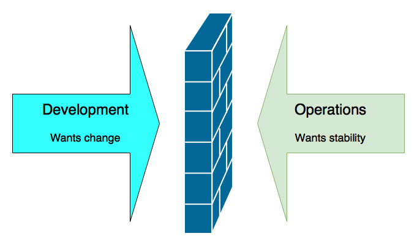
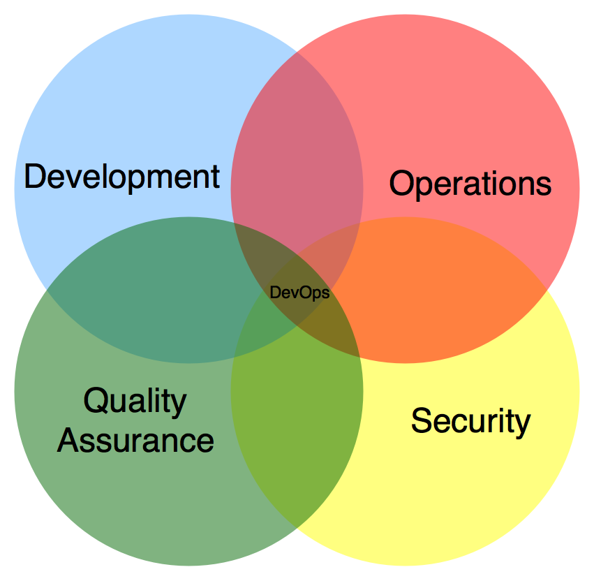
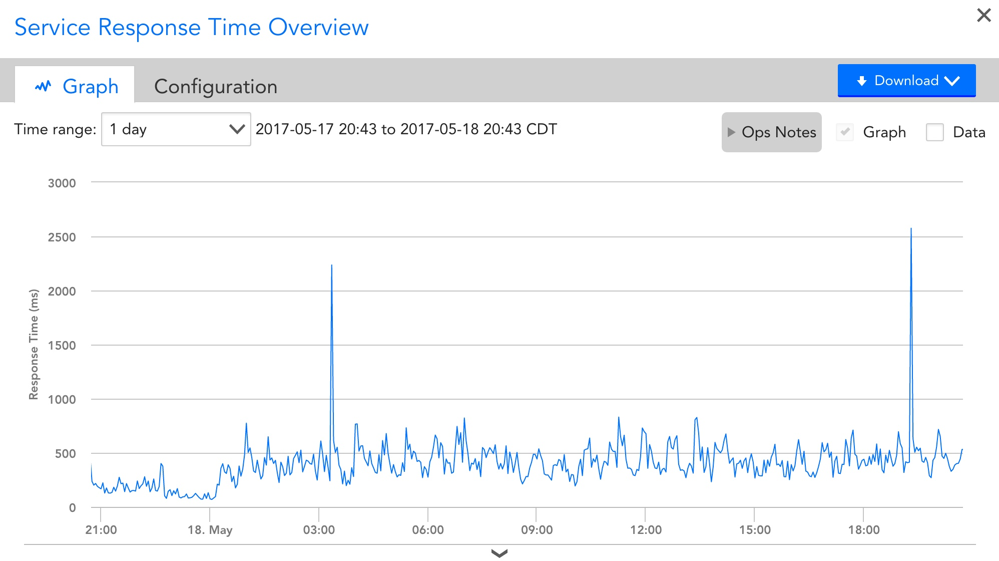

Monitoring: Finding your story
Lee Fox

About Lee
- Cloud Architect at Infor
- Agile, DevOps, and ChatOps advocate
- Past Technology Chair of Agile Austin
- Alexa and Google Home Developer
- Co-Author of Effective Gradle Implementation Video Series on Packt
- Trained Innovation Games Facilitator
- Amateur Chef
Housekeeping
- Feel free to ask questions
- Deeper questions may be deferred to the end
Agenda
- What is DevOps?
- The problem with monitoring
- Dealing with the problem
What is DevOps?
- Not a methodology
- Not a process
- Not something operations do
- Not something developers do
- Not a person
- Not a team
- Not a set of scripts
It's a philosophy
Addresses contention
Addresses contention

Addresses contention

Addresses contention
Who knows what S.E.T.I. is?

S.E.T.I.
- Search for Extraterrestrial Intelligence
- Began February 1, 1985
- Monitors electromagnetic radiation for signs of intelligent life
Huge Problem Set
- 1.0 * 10^24 stars in the universe
- Ideally to find at least one world
Today's problems monitoring
- CPU, Memory, and Disk
- 3 metrics
Today's problems monitoring

- Three tiered systems
- 3 metrics * 3 tiers = 9 metrics
Today's problems monitoring

- We scaled!
- 3 metrics * 6 VMs = 18 metrics
Today's problems monitoring

- Added Docker containers
- 3 metrics * 24 Containers and VMs = 72 metrics
Today's problems monitoring
- Per hour: 1,728 Metrics
- 72 metrics * 24 hours
- Per minute: 103,680 Metrics
- 72 metrics * 24 hours * 60 minutes
- Per second: 6,220,800 Metrics
- 72 metrics * 24 hours * 60 minutes * 60 seconds
Today's problems monitoring
Today's problems monitoring
It's a problem
- Humans have a cognitive limitation for large numbers
- We can easily visualize like 5 things
- We might be able to visualize 100 things
- Beyond that, we're generally lost
How many people are here?
How many people are here?

How many people are here?
How many people are here?
Some Vocabulary
- Monitoring
- Alerting
- Paging
Monitoring
- Simply keeping a watch on your application or system
- Watching for metrics
- Watching for events
Alerting
- Sending some notification when a threshhold has been met.
- Can't have alerting without monitoring
Paging
- Actually notifying someone in person when an alert is generated
- Can't have paging without alerting
Break down the metrics
- Work Metrics
- Resource Metrics
- Events
Work metrics
- Throughput
- Errors
- Efficiency
Resource metrics
- CPU Utilization
- Memory Utilization
- Disk Space
Events
- Scale up/Scale down
- Login/Logout
- Software deployments
- Start of day/End of day
- Backup running
Find your story
Why a story?
- Express meaning
- Easy to communicate
- Easy to remember
- Draw a morale
- Determine if relevant
Build a story
- Metrics convey meaning
- More details mean a richer story
- Draw meaning from your story
Development Story
Development Story
Development Story
What does it mean?
- Amount of code is shrinking
- Percentage of testable code is growing
- Possible: Removing cruft
- Possible: Increasing DRY
- Unlikely: New features are added
Another example
Operational exampleOperational Story
Operational Story
Operational Story

What does it mean?
- Debugging story
- Network problem if direct good, but not bastion
- Application problem if bastion good, but not direct
- How efficient is the Bastion if both are good
How do you build your story?
- Determine what you want
- Start with the details
- Start with the vision
- Gather your metrics
- Tell your story
Determine what you want
- Burning time
- Persuasion
Start with the details
- Focus on a single metric
- Add more detail a little at a time
Start with the vision
- Compelling reason
- Look for supporting details
Gather your metrics
- Resource metrics from monitoring systems
- Work metrics from monitoring/logging
- Events from logging/ALM
Tell your story
- Determine the style
- Determine the medium
- Publish it
What to do with your story
- Share them
- Action on them
Information radiator
Information radiator
ChatOps
Action on your stories
- Setup an alert
- Setup a page
- Create a plan of action
Source Links
- https://www.datadoghq.com/blog/monitoring-101-collecting-data/
- http://io9.gizmodo.com/how-to-comprehend-incomprehensibly-large-numbers-1531604757
Any questions? 
I hope you have enjoyed the session!
Twitter: @FoxInATX
Email: lee.h.fox@gmail.com